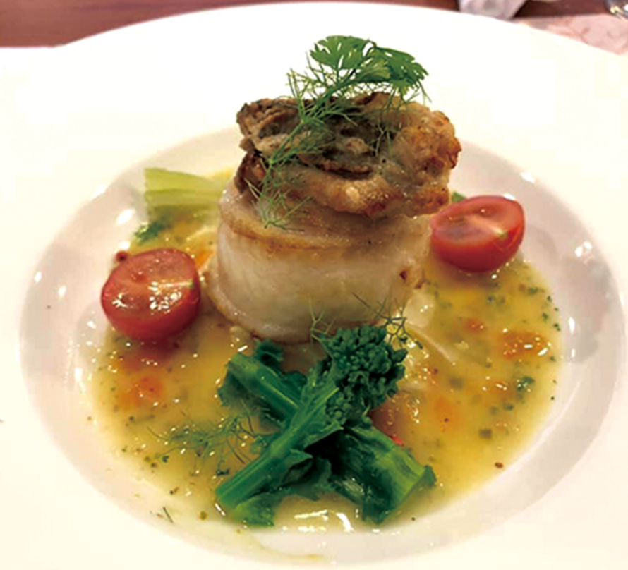

何度でも通いたい姫路の名店GOURMET
何度でも通いたい姫路の名店
シェフの感性と技で
素材の持ち味を華麗なる一皿に
レストラン
サンヴェルジュ メゾン
JR姫路駅からほど近い場所にありながら、ヨーロッパ風の一軒家を思わせるプチメゾン。 大理石を敷き詰め、レセプションを配したエントランスの先には、組細工を施した床面のメインダイニングが広がる。 中央にある大きな暖炉、彫刻された木の柱、アンティークなシャンデリアや絵画など、欧州の雰囲気をそのままに再現した、クラシカルで気品のある空間だ。
シェフの西森耕平氏は「旬の素材の持ち味をいかにすればお客様により美味しくお伝えする事ができるか」を常に心がけているという。 素材を見極め、個々のお客様のご嗜好に合わせて、時には極力シンプルに、時にはめんどうなほどの手をかけて、 一皿の料理に仕上げていく。独創性溢れる一皿は、まさにここならではの味わい。 盛り付けも華やかなコース仕立てで、ゲストの目と舌を魅了する。
さらにサービス技能士1級、ソムリエ資格を持つ支配人を長としたサービスチームが、 特別な時間に優しさを添える。3世代に渡り家族の祝席で利用されることも…。 温かみ溢れるサービスは、極上の隠し味となっているようだ。
tel.079-223-1122 姫路市紺屋町23
11:30～15:00(LO14:00)、
18:00～22:00(LO20:00) 定休日／火曜
特選黒毛和牛を五感で楽しむ
鉄板焼きレストラン
鉄板焼 咲夢（サム）
ステーキは、全国の産地から厳選したA5、A4ランクの特選黒毛和牛を使用。野菜は地産地消を心がけ、 地元の旬のものを焼き・蒸し野菜で提供する。また肉の旨みがほとばしるハンバーグに、 秘伝のベシャメルソースと濃厚な特製デミソースが絡み合う「神戸牛ハンバーググラタン」は必食だ。 多彩なコース料理とおいしいワインが揃うので、大切な方との記念日ディナーや会食などにぴったり。（神戸牛は事前予約のみ）

tel.079-284-4655（完全予約制）
姫路市塩町177 Rビル1F
18:00～22:00（LO21:00）
定休日／不定休
ワインと料理のペアリングを堪能して
ムッシュ田中の料理と
ワインの店VinVin

ソムリエよりワンランク上のシニアソムリエの資格を持つシェフが営む創作フレンチ店。 魚は瀬戸内産の天然のもの使用し、肉・野菜は産地にこだわった厳選食材を国内外より吟味したうえで厳選。 フレンチに必要なフォン・ド・ボーやヒュメ・ド・ポワソンは自家製にこだわり、ここでしか味わえない味わいを提供している。 カジュアルなランチ、ちょっと贅沢なディナーなど様々なシーンで、理とワインのマリアージュを堪能してみよう。
tel.079-284-3939 姫路市立町71 清和立町ビル２F
ランチ 12:00-13:30 （LO）、ディナー18:00-21:00（LO）
定休日／日曜（月曜 連休あり
季節を感じる天麩羅を
スタイリッシュな空間で
天麩羅 團
その日に仕入れた新鮮な旬の食材を、一品一品丁寧に揚げた天麩羅のコースが堪能できる一軒。 味はもちろんのこと、盛り付けや器にもこだわっているため、目と舌の両方で楽しむことができる。 22時以降は単品の天婦羅や一品、店主が毎朝打つ江戸蕎麦などが楽しめます。深夜3時まで営業なので、1軒目はもちろん、 魚町に飲みに行った時の2軒目、3軒目にも利用できるのがうれしい。 大切な記念日やお祝い事にも似合う落ち着いた空間で明日的な時間をどうぞ。
tel.079-284-0141 姫路市魚町129 花むらビル1F
月～土、祝日、祝前日17:00～翌3:00 (LO翌2:30）
定休日／日曜
生産者の想いが詰まった
贅沢な味わいを
セトレハイランドヴィラ 姫路
DINING ROOM ON THE HARIMA
緑で囲まれ、黒を基調としたモダンなレストラン。「出逢い」をコンセプトに、料理長をはじめ、スタッフが生産者を訪れ、
出会った豊かな山、大地、海が育む四季折々の地域の恵みに新たな“出逢い”が一皿に紡ぎ出される。
例えば、魚介類はセトレハイランドヴィラ姫路から眺める播磨平野を流れる川、その先に広がる瀬戸内海でとれる素材を料理長自ら厳選。
肉は兵庫県産の播州百日鶏・姫路産グルメポーク桃色吐息・白鷺牛など、野菜は無農薬・無化学肥料にこだわった安全でおいしい旬の野菜を使用する。
そしてお酒は播磨に点在する24もの個性豊かな酒蔵から季節ごとにお勧めの地酒をセレクト。
ランチタイムは温かな陽の光を感じながら、ディナータイムは空の移り変わりとともに。 町中の喧騒から離れて、ゆっくりした時間を上質な空間でお過ごしいただくのはいかがだろうか。
tel.079-284-3010 姫路市広嶺山224-26
11:30〜15:00 （L.O.14:00）、17:30〜22:00（最終入店時間19:00）
定休日 火・水曜（祝日・夏期・年末年始を除く）
- ※徒歩分数は80mを1分として算出しています。※掲載の情報は、2020年2月時点のもので変更になる場合があります。